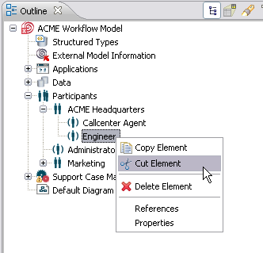

To define new model elements similar to ones you already modeled, you can use copies of these already modeled elements as a basis. In the Stardust Process Workbench you can copy, paste or cut model elements in the Outline view or diagram canvas by options in the context-menu or by key-strokes. You can move or copy model elements between process definitions as well as between models.
If you want to use similar activities with a rather complex configuration, you don't have to recreate them entirely in the target process definition or model. Undo is possible for all operations. To revoke your copy, paste or cut action please select Edit > Undo or use the Ctrl-Z key-stroke.
The set of elements are copied to and pasted from the Stardust clipboard. This clipboard can also be used across model boundaries. The clipboard content is called a copy set.
Copy sets of the following elements are supported:
Process models can be copied via copying the XPDL files.
A copy set may contain an arbitrary number of model elements of arbitrary type, which could be for example three data, two participants and an application:
Figure: Copy Set Example with Elements of Arbitrary Type
You have the possibility to copy elements from the Outline View or from the Diagram Canvas.
In the Outline view copying is possible for the following types:
To copy one or more elements in the Outline view do the following:
Figure: Copying an Element in the Outline View
In diagrams copying is possible for the following types:
To copy one or more elements in the diagram canvas do the following:
Figure: Copying an Element in the Diagram
Please note that the copying option is not available if the selection contains unsupported element types like gateways. All necessary gateways will be added automatically during the copying process, but cannot be copied explicitly.
Cutting Elements is possible for the same elements as for copying elements as described in the sections above.
To cut one or more elements in the Outline view do the following:

Figure: Cutting Elements in the Outline View
To cut one or more elements in the diagram canvas do the following:
Figure: Cutting Elements in a Diagram
Please note that the cut option is not available if the selection contains unsupported element types like gateways. All necessary gateways will be added automatically during the subsequent paste process, but cannot be cut explicitly.
You can paste elements to the Outline View or to the diagram canvas, depending on where you cut or copied them. The Paste Element option for process definition diagrams is only enabled for diagrams of the same process definition.
Note that the Paste Element option is only enabled for the group nodes like Data, Applications or Participants, if all top level elements in the clipboard are of the corresponding type.
Pasting elements from the copy set to
To paste an element to the Outline View:
Figure: Pasting an Element to the Outline View
To paste one or more elements in the diagram canvas do the following:
Figure: Pasting an Element in the Diagram
Elements copied into an arbitrary element ("target element") of the process model structure (e.g. activities into a process definition) will be put semantically under this element independently of their origin. This way, an activity-transition network from one process definition can be copied into another process definition. If a name or ID collision with existing elements occurs, a dialog pops up with name and ID proposals:
Figure: Change Name and ID of the Element.
When copying and pasting elements with relationships to general model elements like participants or applications, you have to decide whether to copy by reference to this elements or to copy by value. This is described in detail in the following section.
Model elements have hierarchical and other relationships to other model elements. Copy and paste operations maintain the hierarchical relationships as specified in the previous sections.
In case elements are selected to be copied into another model, the selected elements may have references to other elements that are not selected explicitly. To prevent inconsistencies, all those referenced elements are also collected. If some or all of those elements already exist in the target model, a dialog opens where you can decide whether to copy by reference or by value. All elements selected in this dialog will be used from the target model and the according references are transferred to those. To copy the referenced elements from the source model to the target model, enable the according checkboxes.
By default, all checkboxes for data, applications and participants are checked to be copied by reference. Enabling the checkboxes makes the tree item(s) editable with a default name and ID of "Copy of X/CopyOfX".
Figure: Choose the Elements to be copied by Reference or by Value.
In case the suggested names CopyOf<name> or CopyOf<id> are already in use, you have to choose a new name and id. The duplicate name or id is marked red and the OK button is enabled:
Figure: Choose the Elements to be copied by Reference or by Value.
When you have a file connection in the Outline view and you are trying to import the model elements by copy in the consumer model, you are prompted to reuse or replace the duplicate element. By default, the Replace existing element with the new one checkbox is selected.
Figure: Conflict
If you are trying to import more than one element by copy then in case of duplicate elements, select the checkbox Use option for all duplicate elements and click OK. In this case, you do not have to select replace or reuse options for each element.
When processes change in a way that, for example, activities are now executed at a different stage in the process flow, it is possibly that the new execution point lies in a different process definition, for example a subprocess. In the modeler you can cut out the activities and paste them into the desired target process definition with the activities keeping all their configuration settings like events, participants, data paths, etc.
In the following example two activities are shifted to another process definition by cutting them out and pasting them in the diagram of the new process definition. This process definition is then assigned as subprocess in the starting process definition.
Figure: Select Elements.
Figure: Cutting out the selected Elements.
Figure: Paste Activities and Elements to New Process Definition.
Now the element cut out from the diagram of the first process definition are pasted to the new process definition:
Figure: Pasted Activities in the New Process Definition.
In the starting process definition you can now add a subprocess activity and assign the new process definition:
Figure: Assign the New Process to the Subprocess Activity.
The following section gives an overview of the operation gestures:
Copying is initiated by the following gestures on the following elements:
| Elements/Gesture | CTRL-C Keystroke | Popup Menu Entry |
|---|---|---|
| Structured Type |
|
|
| Data |
|
|
| Applications |
|
|
| Participants |
|
|
| Process Definitions |
|
|
| Process and model diagrams |
|
|
| Fragments of activity-transition graphs in process definitions |
|
|
Pasting is initiated by the following gestures on the following elements:
| Elements/Gesture | CTRL-V Keystroke | Popup Menu Entry |
|---|---|---|
| Structured Types |
|
|
| Data |
|
|
| Applications |
|
|
| Participants |
|
|
| Process Definitions |
|
|
| Process and model diagrams |
|
|
| Fragments of activity-transition graphs in process definitions |
|
Note
Please note that the CTRL-V keystroke only works in a target diagram where at least one mouse-click
has already been performed. If it is not working for that reason just click in the target diagram before using the
CTRL-V keystroke.
Cutting is initiated by the following gestures on the following elements:
| Elements/Gesture | CTRL-X Keystroke | Popup Menu Entry |
|---|---|---|
| Structured Types |
|
|
| Data |
|
|
| Applications |
|
|
| Participants |
|
|
| Process Definitions |
|
|
| Process and model diagrams |
|
|
| Fragments of activity-transition graphs in process definitions |
|
|